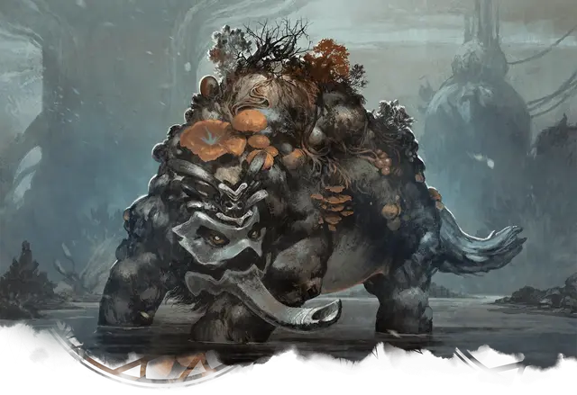

Солоноводный болотник
Brackish Trudge
Большое Растение, без мировоззрения

Класс Доспеха 12 (природный доспех)
Хиты 68 (8к10 + 24)
Скорость 30 футов, плавая 30 футов
| мод | спас | ||
|---|---|---|---|
| СИЛ | 20 | +5 | +5 |
| ЛОВ | 10 | +0 | +0 |
| ТЕЛ | 17 | +3 | +3 |
| мод | спас | ||
|---|---|---|---|
| ИНТ | 4 | −3 | −3 |
| МДР | 14 | +2 | +2 |
| ХАР | 4 | −3 | −3 |
Навыки Восприятие +4
Сопротивление урону огонь
Чувства слепое зрение 10 футов, пассивное Восприятие 14
Опасность 3 (700 опыта)
Бонус мастерства +2
Особенности
Стойкость гриба. Если болотник получает урон, уменьшающий хиты до 0, он совершает спасбросок Телосложения Сл 5 + полученный урон, если только это не был урон излучением или урон от критического попадания. При успехе хиты болотника опускаются всего лишь до 1.
Действия
Бивень. . Рукопашная атака оружием: +7 к попаданию, досягаемость 10 футов, одна цель. Попадание: 16 (2к10 + 5) колющего урона плюс 3 (1к6) урона ядом. Если целью является существо, оно должно преуспеть в спасброске Силы Сл 15, иначе будет сбито с ног.
Описание
Солоноводный болотник - это неуклюжие массы разумных грибов и растительности, которые процветают в болотинах. Они являются живыми примерами конфликтующих сил жизни и распада, существующих в гармоничном цикле. Цветы и другие растения растут у них на спинах, шеях и головах. Когда эти растения умирают, они разлагаются и становятся идеальной средой обитания для грибов. Чем старше болотник, тем более дикими и разнообразными становятся растения и грибы, которые процветают в крошечной экосистеме на его спине.
Хотя иногда они вспыльчивы и агрессивны, солоноводные болотники обычно довольные тем, что занимаются своими делами. Когда болотники встают на защиту или отгоняют противников, их грозные бивни, пропитанные смертоносными спорами грибов, могут быстро расправиться с беспечными странниками. Болотники также печально известны тем, что их трудно убить; энергия жизни и смерти внутри них позволяет им переживать ужасные травмы.